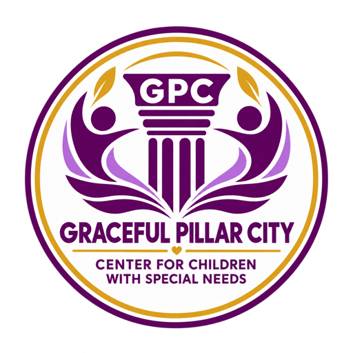
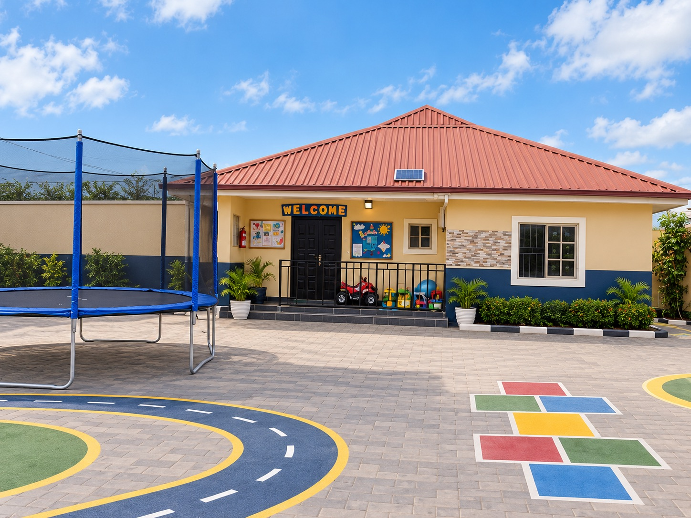
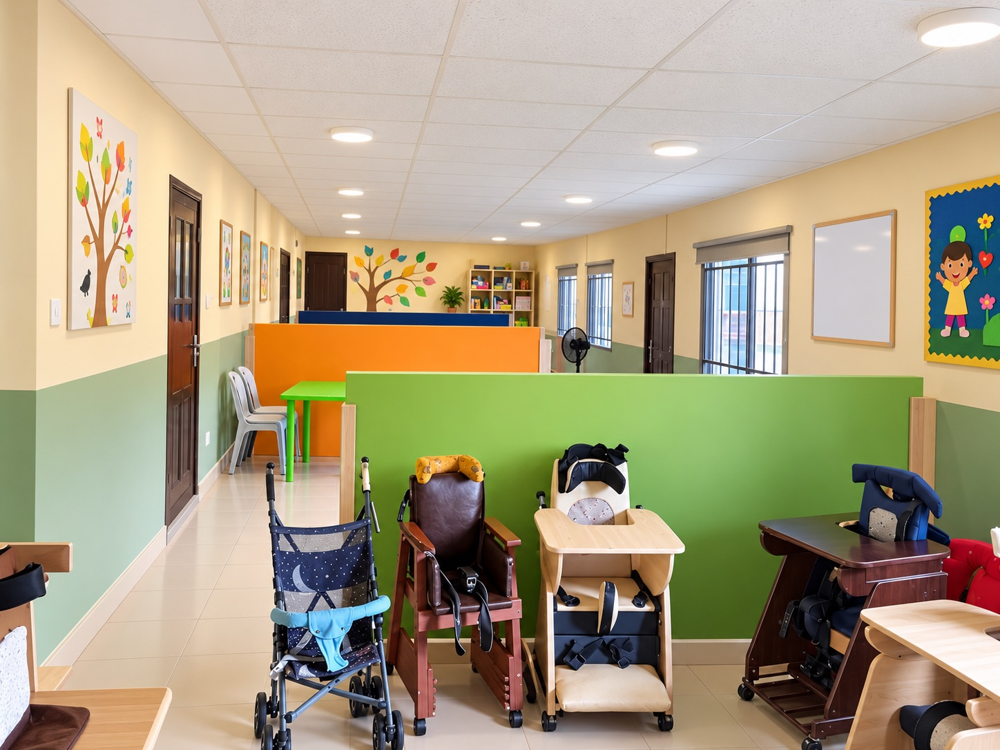
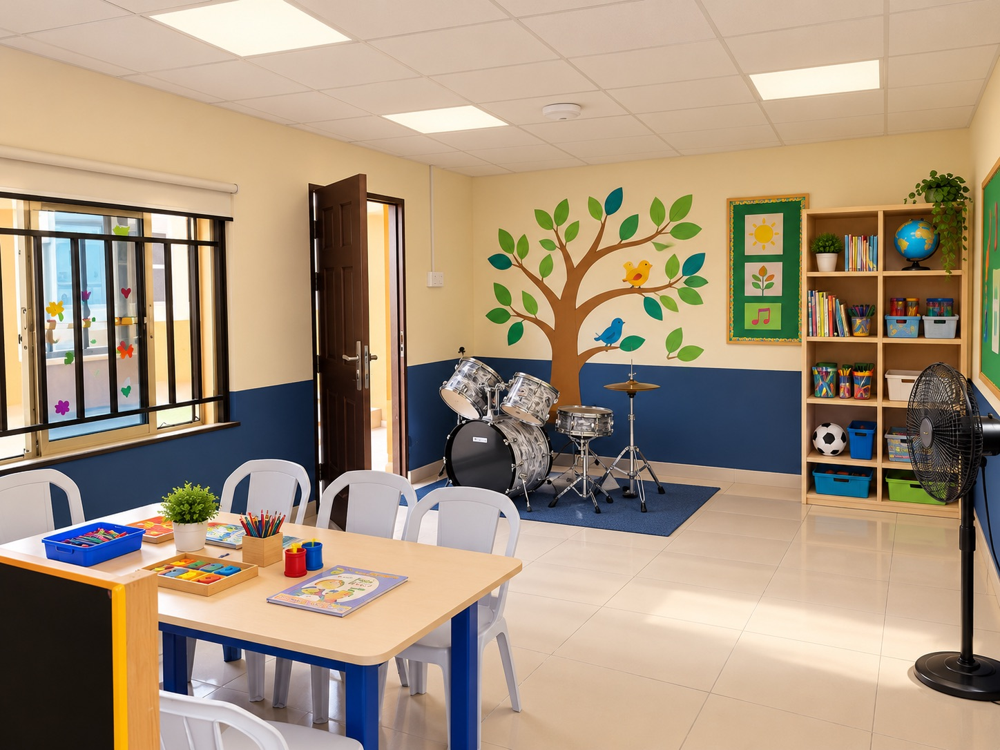
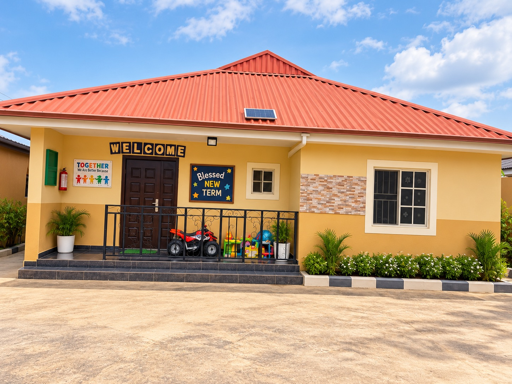
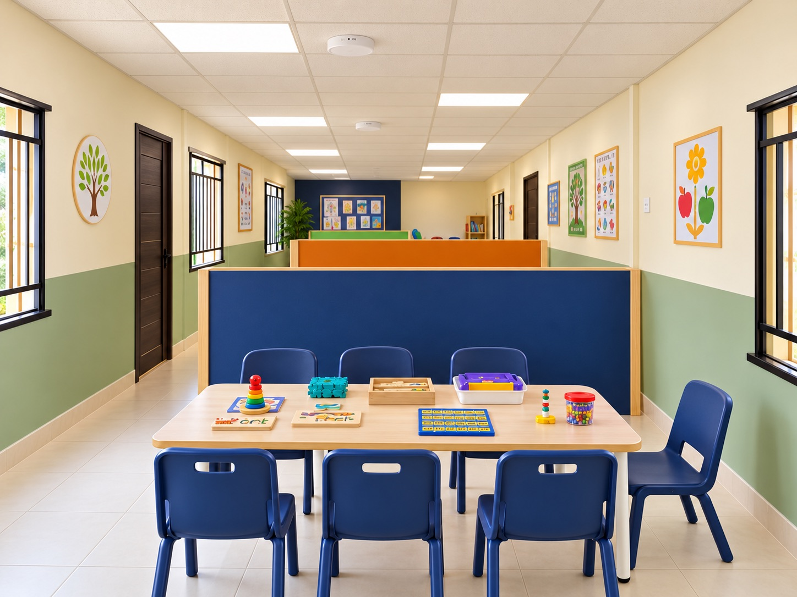

Speech & language
Building communication, understanding, confidence, and connection through tailored therapy.
Ask about speech therapy ↗
Graceful Pillar CityCare. Learning. Possibility.Pediatric therapy & learning support
Compassionate, evidence informed care shaped around each child’s strengths, pace, and potential alongside the families who know them best.

Care with dignity
✦Progress with purpose
✦Possibility for every child
How we help
Our multidisciplinary approach brings therapy, learning, and family support together into one thoughtful plan.
Building communication, understanding, confidence, and connection through tailored therapy.
Ask about speech therapy ↗Helping children process their world and participate more comfortably in everyday activities.
Explore sensory support ↗Supporting movement, balance, coordination, strength, and growing independence.
Ask about physical therapy ↗Practising the tools children need to connect, communicate, play, and build relationships.
Explore social support ↗Music, art, and craft experiences that support expression, regulation, and confidence.
Explore creative therapy ↗Occupational therapy, behavioural support, hydrotherapy, and school accompaniment.
Find the right support ↗
Designed around the whole childAbility. Comfort. Independence.
Our approach
We begin with your child—not a label. Together, we identify practical goals that matter at home, at school, and in everyday life.
A thoughtful assessment helps us see strengths, needs, and priorities clearly.
Therapists align around a practical, individual support plan.
We share what works, celebrate progress, and adjust as your child develops.
Our environment
Purposeful learning areas support movement, creativity, communication, and focused one-to-one care.



Flexible care
Choose the combination of centre, school, weekday, or weekend support that works for your child and family.
Structured sessions and learning support designed around your child’s routine.
Consistent, attentive support in a safe and nurturing environment.
Therapy support and accompaniment that can extend into school and weekends.
Good to know
Every family’s journey is different. These are helpful places to begin.
You do not need to decide alone. We begin with a conversation and assessment, then recommend support based on your child’s strengths and needs.
Yes. When helpful, specialists work as one team around shared goals and a coordinated support plan.
Yes. Family insight shapes priorities, and practical guidance helps progress continue beyond sessions.
Support can extend to school and weekends, depending on your child’s plan and the service required.
A thoughtful first step
Tell us a little about your child. Our care team can help you understand the most suitable place to begin.